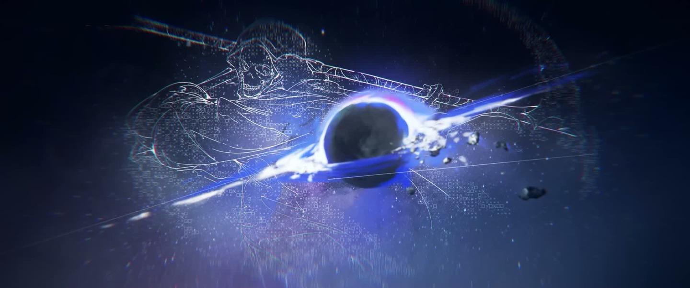
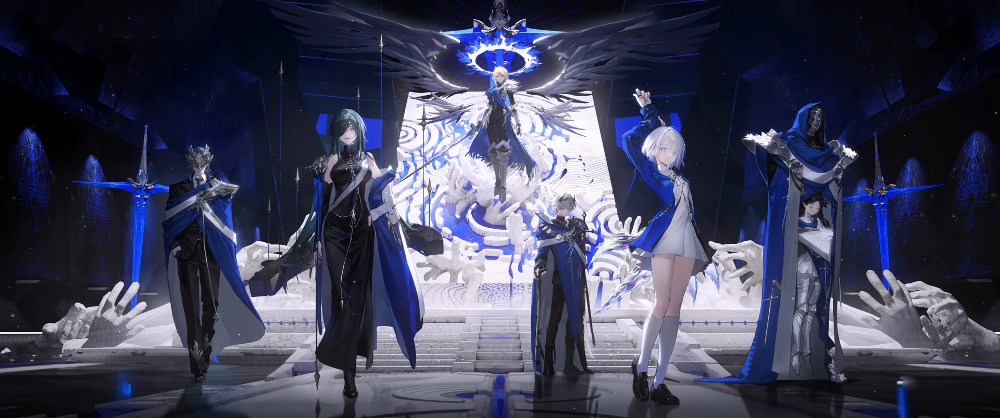
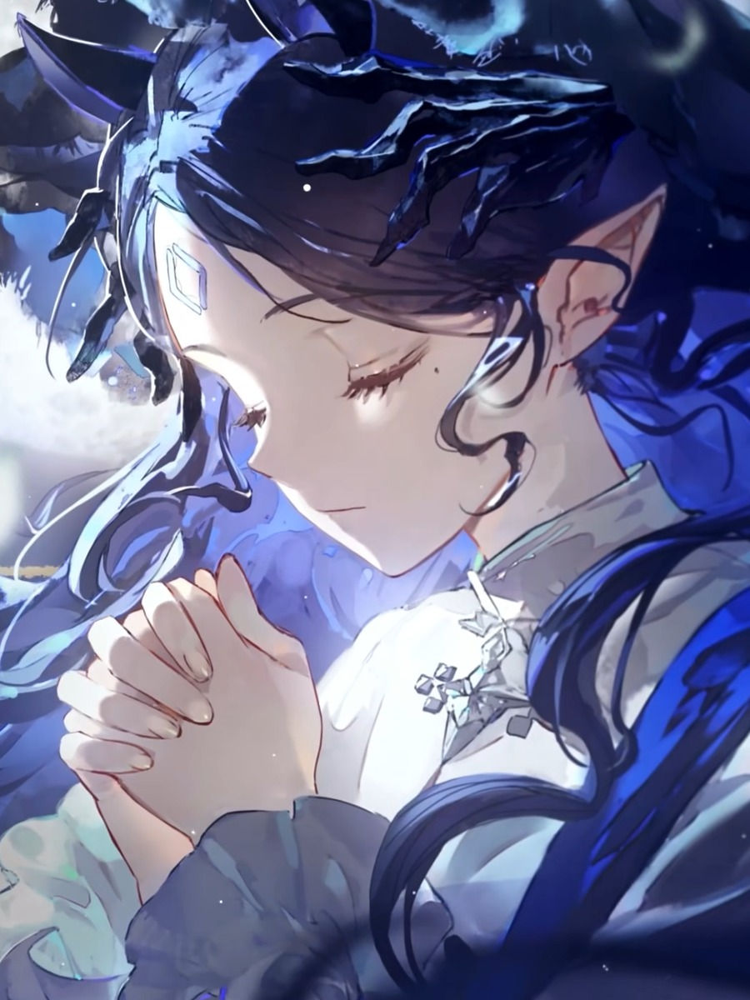
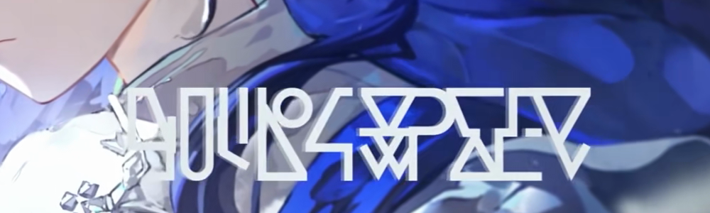
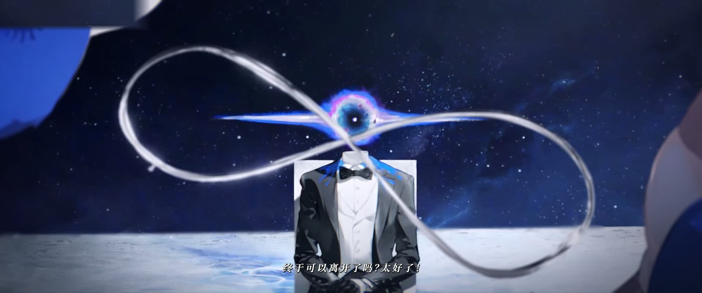
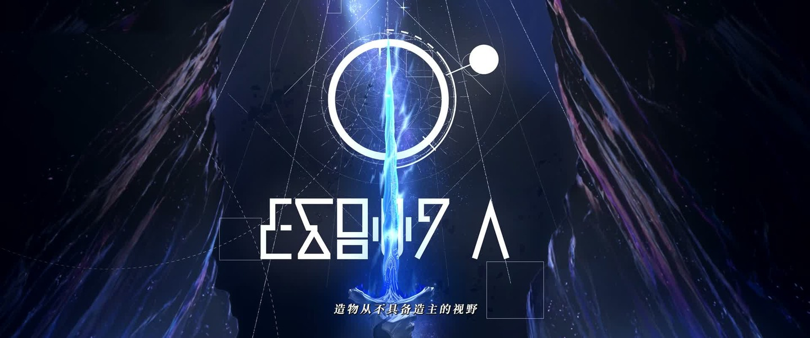
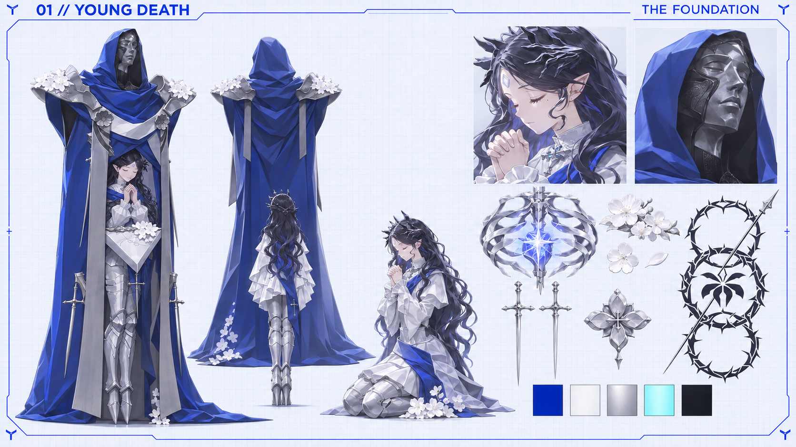
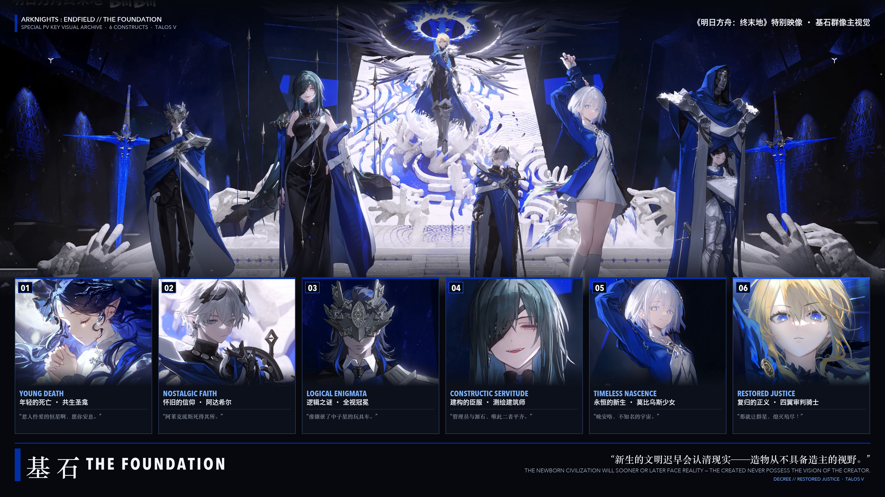
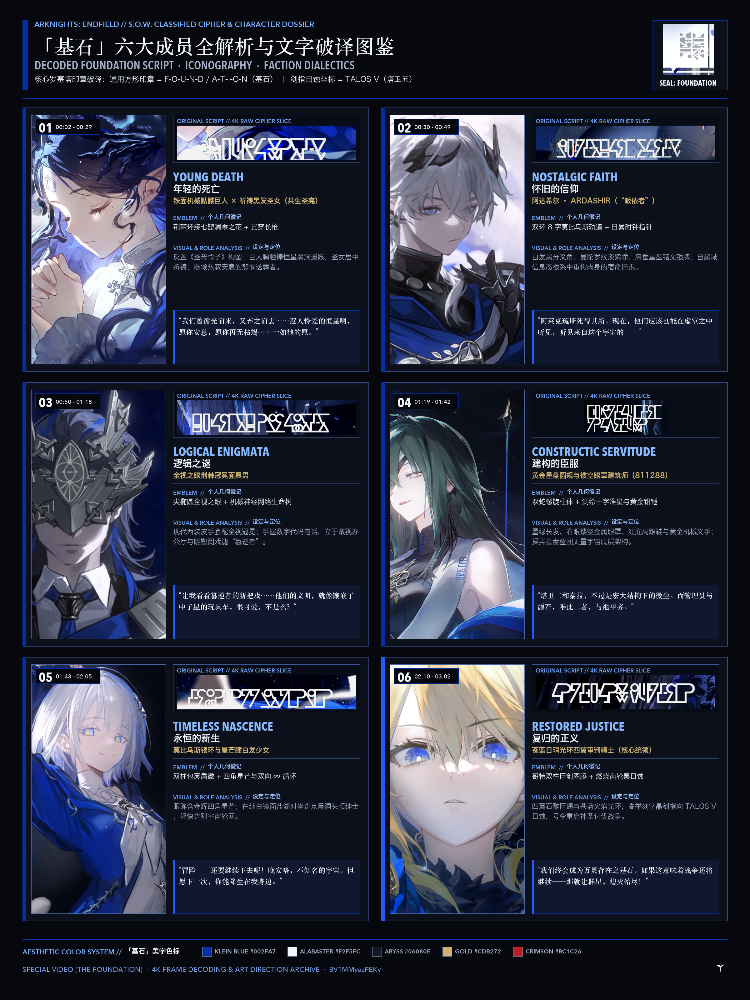

00:08线框持枪骷髅战士 · 阿莱克琉斯（Allectus）
以蓝白几何点阵线框跨越黑洞吸积盘的兜帽重装千夫长。对应 V1.4《向渊行》武陵北部禁区登场的「造裔」Boss，在与管理员交锋战死归寂之际，以自身坐标将塔卫二位置传回「基石」，与阿达希尔台词“阿莱克琉斯死得其所”直接互文。

“新生的文明迟早会认清现实——造物，从不具备造主的视野。”
THE NEWBORN CIVILIZATION WILL FACE REALITY — THE CREATED NEVER POSSESS THE VISION OF THE CREATOR.
虽然六人在终局圣殿列阵同框，但前五位的哀悼、怀旧与戏谑已被第六位最高裁决者叱为“怀柔的把戏”。点击下方序列或使用键盘 ← / → 切换角色解析，并支持一键跳转至 PV 对应时刻。


DIALOGUE // 原片台词实录

00:08以蓝白几何点阵线框跨越黑洞吸积盘的兜帽重装千夫长。对应 V1.4《向渊行》武陵北部禁区登场的「造裔」Boss，在与管理员交锋战死归寂之际，以自身坐标将塔卫二位置传回「基石」，与阿达希尔台词“阿莱克琉斯死得其所”直接互文。

01:45 / 02:00身着古典黑燕尾服、白马甲与黑领结，头部却是一颗旋转的蓝紫坍缩奇点黑洞（背后带有白色方形背板）。随少女告别“晚安咯，不知名的宇宙……但愿下一次，你能降生在我身边”而化为方格星尘消散。
承袭《明日方舟》萨卡兹古文字（Sarkaz Cipher） 1:1 英文字母置换语法与几何连字规则。本站通过高清 SVG 矢量路径引擎与内嵌 @font-face Webfont 字体文件（FoundationPVStroke.woff2/.ttf × EndfieldByButan.ttf）双重驱动，实现全片印章、六大代号及任意文本实时暗号渲染。
校验原理：印章原始状态为两列各 5 字母顺时针旋转 90° 竖排。旋正后呈现 F-O-U-N-D（上行）与 A-T-I-O-N（下行），其中 (1,2) 与 (2,4) 符号同为 O、(1,4) 与 (2,5) 符号同为 N，SVG 矢量重绘与原片切片无缝对齐。

四翼骑士举剑直指星蚀时浮现 5 字母词汇接空格与倒 V 罗马数字。结合游戏档案中管理员曾将「基石」放逐至超域的历史，强烈指向塔卫二之外的塔卫五（Talos-V）大本营坐标。
cipher_02.png 与 PRTS 社区萨卡兹文字表交叉比对，02 号第二词第 2 位实为锐角三角形 R（FRITH，古英语“安宁/庇护”，与 Enigmata / Nascence 同属古典古词），并非 FA（Faith）。811288、蓝图刻度 2/ 1234567890 均严丝合缝匹配 0-9 字符集；游戏中萨卡兹/基石文字常采用常规横排、顺时针 90° 竖排（如 FOUND/ATION 印章与 04 号片头）、倒置 180° 与左右镜像四种加密变换。RE / CE（06 Restored Justice 将左脚 R/C 嵌于 E 下方）与 NA / SC 连字；全员代号均采取“形容词 ↔ 抽象名词”矛盾修辞，隐喻超越线性时间的高维本质。从剥除所有“工业安全黄”的克莱因蓝色谱，到跨越两千年的古典宗教雕塑、福柯敞视规训、粗野主义建筑与古罗马浮雕互文——解构鹰角如何用三分钟建构出一座高冷神殿。
点击任意色块可一键复制 HEX 色值；右侧切换开关对比两大阵营的意识形态视觉鸿沟。
本地 / 局域网部署环境自动优先加载原生 4K 4096×1716 H.264（+faststart）高清原片，云端版本自动切换为 20MB 宽银幕流畅流媒体；支持一键切换画质源与台词考据实时同步追踪。
由本机 Codex CLI（gpt-6.2-astra × image_gen） 严格对照 4K 原片无水印参考帧绘制并逐张经视觉校验，全套 6 位「基石」成员统一采用浅雪花石膏瑞士工程网格、正面/背面/3/4 侧身三视图与配件徽记拆解排版。

每个参考图包（c01–c06、frames、cipher）均在对应 raw/ 子目录内完整附带原生 4096×1716 无裁切无损 PNG 原帧（53 份），与 58 张聚焦参考素材 成对收录，支持分类筛选、一键在灯箱中直阅 RAW 4K 原画及无损下载。
结合原片美学考据与 4K 无水印素材制作的两款主题宣传海报，点击即可进入全屏灯箱鉴赏细节或下载无损原图。


从 4K 原片逐帧考据、基石文字密码学破译、艺术史美学互文，到全套 6 位角色 Codex 设定集人设图绘制与交互式专题交付——全景归档「基石」特别映像的完整核心结论。
| 序列 | 破译代号 / 中文 | 出场时刻 | 视觉核心锚点 | 阵营立场与定位 | 核心判词 / 台词摘要 | 快捷交互 |
|---|
在「基石」建筑师的宏观结构论里，塔卫二与泰拉行星只是宏大建筑下的微尘；而面具男的“镶嵌了中子星的玩具车”则点破真相——人类脆弱的“文明环带（玩具车）”之所以能产生超常反应，全赖“管理员与源石（中子星）”这一被强行嵌入凡俗系统的最高位格奇点。
方形印章校验确认为 FOUNDATION；剑指日蚀铭文破译为 TALOS V；02 号经 4K 与萨卡兹文字核对勘误为 NOSTALGIC FRITH（古英语“怀旧的安宁”），04 号携编号 811288 与标尺 2/ 1234567890。全站同步嵌入 SVG 矢量与 WOFF2/TTF 双重字体文件，实现 26 字母与数字实时渲染。
PV 通过群像对话暴露了「基石」阵营内部的态度温差：01 芬诺拉（Fionnuala）与「本有」咏唱恒星安息挽歌，02 阿达希尔（Ardashir）借千夫长阿莱克琉斯（Allectus）之死寄望虚空共鸣，03 戏谑“篡逆者”，04 冷漠丈量结构，05 轻快告别；最终由 06 号四翼统帅一剑斩断温情，宣言以战争重启铸就“万灵存在之基石”。
彻底剥离终末地工业代表凡人开拓热忱的暖安全黄，全面改用克莱因蓝（#002FA7）+ 雪花石膏白 + 极夜黑建构绝对理智的神殿，仅保留红底高跟鞋与黄铜星盘作危险/神性点睛。
连续化用反置《圣母怜子》活体圣物匣、圆形神庙网格解构、福柯敞视办公厅、粗野主义十字巨构、镜面盐湖克尔黑洞及古罗马蒙眼士兵浮雕 × 罗丹万手圣坛。
每位成员均匹配高反差垂直几何徽记、Y 字形工程对位准星（Fiducial Marks）、ASCII 故障噪点与黑白半调闪烁；配乐自钢琴圣咏层层推至管弦电子摇滚高潮。